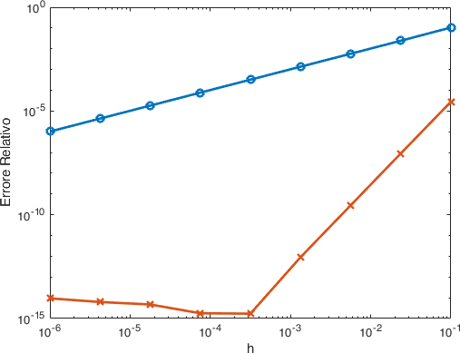

Laboratorio 10 : Metodi di tipo Runge-Kutta#
Come abbiamo visto nello scorso laboratorio i metodi di Eulero in avanti e all’indietro, ovvero, esplicito ed implicito, hanno un ordine di convergenza di uno. Questo fa sì che per raggiungere una accuratezza maggiore sia necessario compiere un grande numero di passi di integrazione.
Per risolvere questo problema avete visto a lezione come costruire metodi ad un passo di ordine più elevato, ovvero i metodi di Runge-Kutta.
Un’altra buona proprietà dei metodi Runge-Kutta è quella di eliminare la necessità di differenziazioni ripetute delle equazioni differenziali, cosa che ad esempio richiedono le formule di integrazione basate sulla serie di Taylor.
Costruzione#
Per costruire i metodi di Runge-Kutta si traspone il problema dalla forma differenziale alla forma integrale a cui si applicano poi opportune formule di quadratura dalle quali si ottiene l’approssimazione discreta della soluzione.
Dato il problema di Cauchy per una equazione del primo ordine
scriviamo la sua formulazione in forma integrale
come nei casi dello scorso laboratorio scegliamo di nuovo una griglia uniforme
e approssimiamo il valore della soluzione nel punto \(t_1\) con
applichiamo la sostituzione \(s=t_0 + \theta h\) e normalizziamo l’intervallo di integrazione
Applicando ora una formula di quadratura su dei nodi \(\theta_i\) di pesi \(b_i\) otteniamo quindi una stima del valore \(y_1\):
dove i valori \(K_i\) sono approssimazioni di \(y(t_0+\theta_i h)\) per cui dobbiamo ancora ricavare una approssimazione numerica. Applichiamo nuovamente la stessa procedura e scriviamo
Scegliamo una nuova formula di quadratura, per semplicità sugli stessi nodi di quella per gli integrali «esterni», con pesi \(a_{ij}\) e otteniamo:
In generale un metodo di Runge-Kutta così costruito è quindi caratterizzato da tre parametri: un vettore \(b = (b_i)_ {i=0,\ldots,s}\), una matrice \(a=(a_{i,j})_ {i,j=0,\ldots,s}\) e un vettore \(\theta = (\theta_i)_ {i=0,\ldots,s}\).
L’approssimazione è data dal sistema:
Implementazione#
La versione più popolare, spesso nota semplicemente come metodo Runge-Kutta, prevede la seguente sequenza di operazioni:
si tratta di un metodo esplicito di ordine 4.
Esercizio
Si implementi il metodo RK4 descritto in (15) utilizzando il seguente prototipo di funzione
function [y,x] = RK4(f,y0,a,b,h)
%RK4 Implementazone del metodo di Runge-Kutta esplicito del quarto ordine.
% INPUT:
% f = handle della funzione che specifica l'equazione
% differenziale f(x,y) = [dy1/dx dy2/dx dy3/dx ...].
% y0 = vettore dei valori iniziali
% a,b = estremi dell'intervallo di integrazione
% h = passo di integrazione
% OUTPUT:
% y = valori calcolati della soluzione nei corrispondenti valori
% della x
% x = valori della x nei quali è stata calcolata la soluzione
end
Che possiamo testare sullo stesso problema che abbiamo usato per i metodi di Eulero impliciti/espliciti
%% Il metodo di RK4
clear; clc; close all;
f = @(x,y) - (2*y + (x^2)*(y^2))/(x);
ytrue = @(x) 1./(x.^2.*(log(x)+1));
a = 1;
b = 2;
h = 1e-2;
y0 = 1;
[y,x] = RK4(f,y0,a,b,h);
figure(1)
plot(x,y,'r--',x,ytrue(x),'b-','LineWidth',2);
xlabel('x');
legend({'Computed Solution','True Solution'},'FontSize',14);
figure(2)
semilogy(x,abs(y-ytrue(x)),'r-','LineWidth',2);
xlabel('x');
ylabel('Errore Assoluto');
Possiamo di nuovo analizzare la convergenza di questo metodo e confrontarla con quella del metodo di Eulero in avanti che abbiamo visto durante lo scorso laboratorio
%% Convergenza
k = 9;
h = fliplr(logspace(-6,-1,k));
err = zeros(k,1);
errRK = zeros(k,1);
for i=1:k
[y,x] = expliciteuler(f,y0,a,b,h(i));
[yrk,xrk] = RK4(f,y0,a,b,h(i));
yt = ytrue(x);
err(i) = norm(y - yt)/norm(yt);
errRK(i) = norm(yrk - yt)/norm(yt);
end
figure(3)
loglog(h,err,'o-',h,errRK,'x-','LineWidth',2);
xlabel('h')
ylabel('Errore Relativo');
Da cui otteniamo i risultati in Fig. 23.

Fig. 23 Paragone tra la convergenza del metodo di Eulero in avanti (esplicito) e il metodo esplicito di Runge-Kutta di ordine 4.#
Con il metodo RK4 raggiungiamo più velocemente la precisione di macchina per un valore di \(h\) più elevato di quello del metodo di Eulero. Questo è l’effetto dell’ordine più alto.